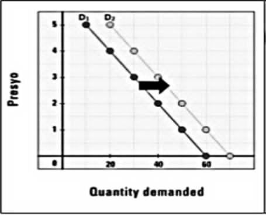
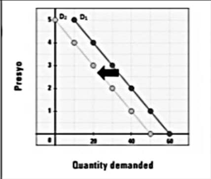
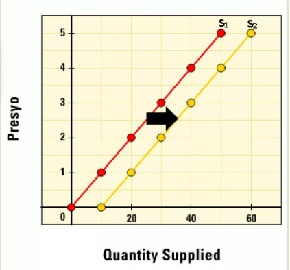
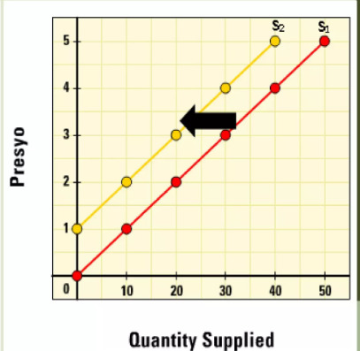
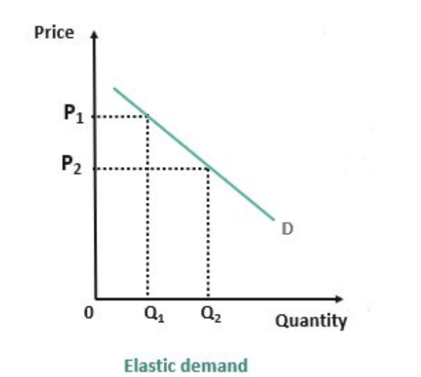
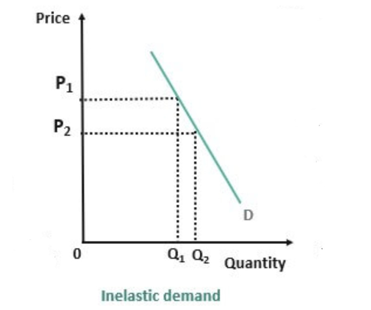
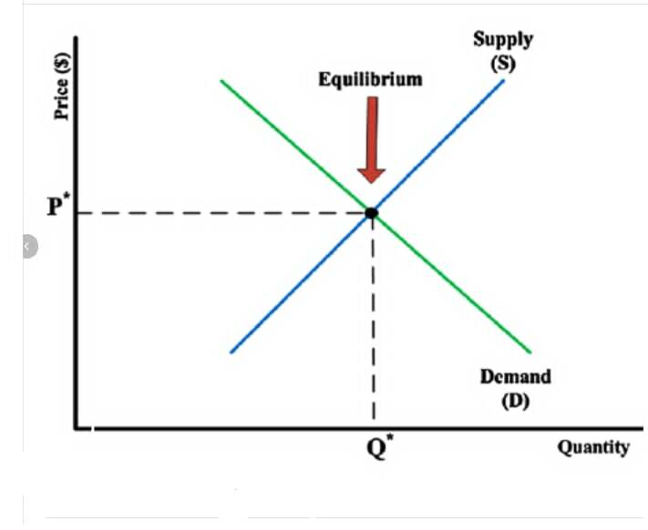
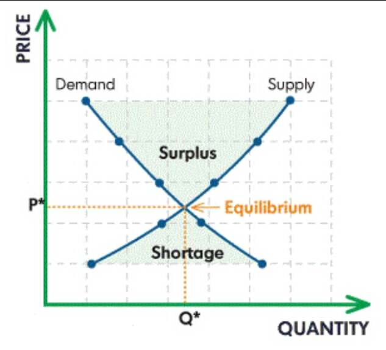
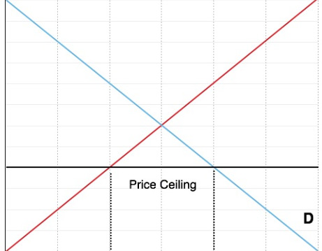
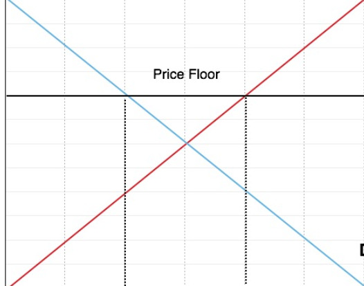

Pagtaas ng Demand

Pagbaba ng Demand
Ang demand ay tumutukoy sa dami ng produkto o serbisyo na gusto at kayang bilhin ng mga mamimili sa isang takdang presyo at panahon.
Ang presyo ang pinakamahalagang nagtatakda (determinant) sa dami ng demand.
Ipinagpapalagay na ang presyo lamang ang salik na nakaapekto sa pagbabago ng quantity demanded, habang ang ibang salik ay hindi nagbabago o nakaapekto rito.
Demand = Kagustuhan + Kakayahan
Qd = a - bP
Kung saan:
Qd = dami ng demand (Dependent)
a = dami ng demand kung ang presyo ay 0
-b = slope ng demand function
p = presyo
Flow of representation ng batas ng demand.
Isang linya na nagpapakita ng negatibong relasyon ng presyo at dami ng produktong handang bilhin ng mamimili.

Pagtaas ng Supply

Pagbaba ng Supply
Ang supply ay dami ng produkto o serbisyo na gustong ibenta ng mga produsyer sa isang takdang presyo at partikular na panahon.
Supply = Pagnanais + Kakayahan
Ang supply function ay nagpapakita ng ugnayan ng presyo at dami ng produkto na handang ipagbili ng prodyuser.
Ang supply schedule ay isang talahanayan na nagpapakita ng dami ng produkto na handang ipagbili sa iba’t ibang presyo.
Ang supply curve ay grapikong paglalarawan ng ugnayan ng presyo at dami ng produkto na handang ipagbili.
Ang market supply ay kabuuang dami ng produkto na handang ipagbili ng lahat ng prodyuser sa pamilihan.
Ang batas ng supply ay nagsasabing kapag tumaas ang presyo, tumataas din ang dami ng produktong handang ipagbili, at kabaliktaran kapag bumaba ang presyo.

Elastic Demand

Inelastic Demand
Paraan upang masukat ang pagtugon ng mga mamimili at nagtitinda sa pagbabago ng presyo.
Pagsukat ng porsiyento ng pagtugon ng mamimili sa bawat porsiyento ng pagbabago ng presyo.
Pagsukat ng porsiyento ng pagtugon ng nagtitinda sa bawat porsiyento ng pagbabago ng presyo.

Equilibrium Point

Surplus at Shortage
Isang kalagayan na walang sinuman sa mamimili at nagtitinda ang gustong baguhin ang kasalukuyang sitwasyon sa pamilihan. Ipinapakita rito ang pagkakasundo ng bumibili at nagtitinda sa isang takdang presyo at dami ng produkto.
If price increases: Supply ↑ , Demand ↓
If price decreases: Supply ↓ , Demand ↑
Ang dami ng demand ay maaaring kulang o sobra sa supply.
Dami ng Demand ≠ Dami ng Supply
Ang dami ng supply ay mas marami kung ihahambing sa dami ng demand.
Dami ng Demand < Dami ng Supply
Ang dami ng demand ay mas marami kung ihahambing sa dami ng supply.
Dami ng Demand > Dami ng Supply
Ganap na Kompetisyon
Monopolyo
Mula sa ideya ng kompetisyon ay nagkaroon ng iba’t ibang estruktura ng pamilihan.
Sa ilalim ng di-ganap na kompetisyon ay napapabilang ang monopoly, monopolistikong kompetisyon, oligopoly, at monopsonyo.
Malaya ang pamilihan sa ilalim ng estrukturang ito sapagkat dito ay walang kontrol ang pamahalaan. Isang halimbawa ng kontrol ay ang paglalagay ng price ceiling.
Mas madaling matamo ang di-ganap na kompetisyon kaysa ganap na kompetisyon dahil mahirap tuparin ang mga kondisyon ng ganap na kompetisyon.
Ang monopoly ay paggawa ng isang produkto o serbisyong walang kauri at walang maaaring kumalaban.
Ito ay estruktura ng pamilihan na may mga elemento ng ganap na kompetisyon at monopoly. Maraming mamimili at nagbebenta ng magkakatulad ngunit may pagkakaibang produkto batay sa brand name.

Ceiling Price

Floor Price
Ang pagtatalaga ng pamahalaan ng pinakamababa at pinakamataas na presyong maaaring itakda sa mga produkto at serbisyo.
Kilala ito bilang Price Control Act na may layuning maisagawa ng pamahalaan ang pagkontrol sa presyo ng mga bilihin.
Ito ay may layunin na mabantayan ang mga presyo ng mga produkto upang mapigilan ang paggalaw nito sa pamamagitan ng price ceiling at pamahalaan.
Ito ay ang pinakamataas na presyong itinakda ng pamahalaan upang ipagbili ang mga produkto.
Isinasagawa ito ng pamahalaan upang tulungan at bigyang proteksyon ang mga prodyuser upang mabayaran ang mga gastos sa produksyon.
Ito ay ang pinakamababang presyong itinakda ng pamahalaan upang ipagbili ang mga produkto.
Sa mga araling tinalakay, natutuhan ko kung paano gumagana ang pamilihan at kung paanong ang presyo, demand, at supply ay nagtatagpo upang makamit ang equilibrium. Naunawaan ko rin ang papel ng pamahalaan sa pagpapanatili ng patas na kalakalan sa pamamagitan ng pagtakda ng presyo. Sa lahat ng paksa, ang pinaka tumatak sa akin ay ang Market Equilibrium, dahil dito ko nakita kung paanong ang simpleng pagbabago sa presyo o supply ay maaaring makaapekto sa buong ekonomiya. Ipinakita nito na ang balanse sa pagitan ng mamimili at prodyuser ay mahalaga upang maiwasan ang kakulangan o labis na produkto, at mapanatili ang kaayusan sa pamilihan.